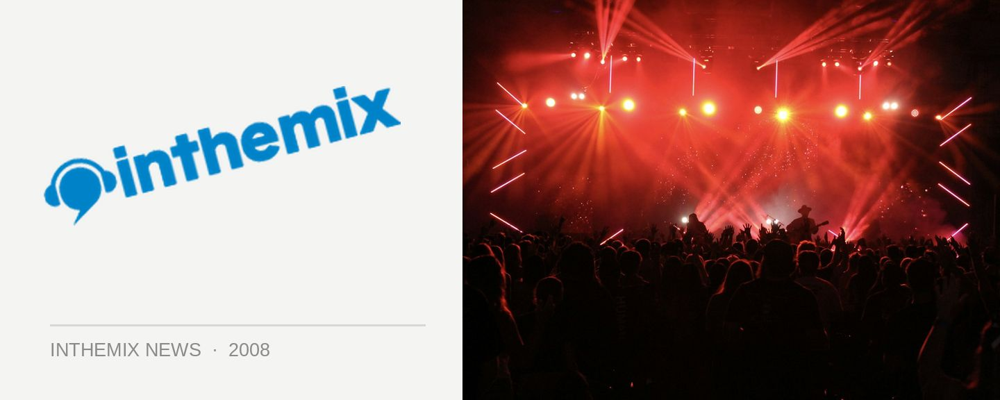

Sydney nightclub erupts into Sunday evening brawl
A nightspot in the Sydney business district of Parramatta, The Roxy Hotel, was one of the 50 venues labeled by the NSW Government as the “most at-risk” of alcohol-related violence, but it’s had a less than impressive start after being slugged with a 2am lockout plus other restrictions last week. On Sunday evening more than 600 clubbers were caught up in the ruckus when a brawl erupted outside the Roxy Hotel at 11.45pm, with riot squads called in to quell the violence and even a helicopter summoned to the scene.
“Upon arrival, police were confronted with very intoxicated, brawling patrons and further assistance was required,” a police spokeswoman told the SMH. However, there’s been no confirmation yet on how many people were directly involved in the brawl. “We had 600 people that were in the street but that doesn’t mean that every one of them was involved in the brawl, just to clarify that… It was more that we had a large number of people that had to be dispersed and within that large number of people there were a number of people that got into altercations.”
Two security guards who were working at the club were seriously injured and taken to hospital, and three punters involved in the brawl were charged with hindering police, resisting arrest, disobeying a move on direction and offensive behaviour. Police believe the fights erupted when a large number of people attempted to leave the venue at the same time. The event taking place at The Roxy was called Summerfest 08, which had kicked off at midday and was winding up around the time when the brawl erupted on George Street out the front of the club. Timmy Trumpet, Tenzin and John Glover were some of the acts on the bill.
Want to find out more about the 2am lockout and other restrictions that were imposed on Sydney venues last week? Check out ITM’s Lifestyle feature.